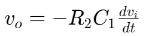
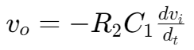
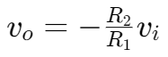
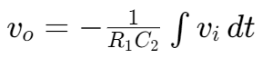
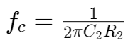

微分器和积分器 | The Differentiator and the Integrator
微分器 | The Differentiator
Exact Differentiator:


Approximate Differentiator(also high-pass filter):

cut-off voltage:
当输入频率小于 fc 时，
当输入频率大于 fc 时，
积分器 | The Integrator
Exact Integrator:


Approximate Integrator(also low-pass filter):

cut-off voltage: 
当输入频率小于 fc 时，
当输入频率大于 fc 时，